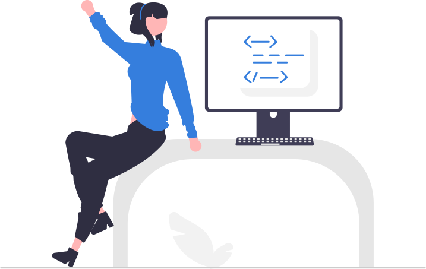

# Load Packages ------------------------------------------------------
library(tidyverse)
library(easystats)
# Prepare Data -------------------------------------------------------
## Import Data
raw_data <- read_csv("example.csv", na = "-999") # Set -999 as missing
## Tidy Data
tidy_data <-
raw_data |>
select(id, group, score) |> # Drop unused variables
mutate(score = score / 100) # Rescale from 0-100 to 0-1
# Fit Models ---------------------------------------------------------
fit <- lm(score ~ group, data = tidy_data) # Compare groups' scores
model_parameters(fit)
model_performance(fit)Foundations of
Data Science
Spring 2023 | Course 399/800
Jeffrey M. Girard | Lecture 06a

Roadmap
Code Style
Chunk Options
More Quarto
Activity
Code Style
Code Style
Style describes optional changes
e.g., how to name files and objects
e.g., where to add spaces and line breaks
- There is no “right” or “wrong” with style
But using a consistent code style has benefits
Code becomes more readable and predictable
Collaboration becomes easier and smoother
- We will learn about the tidyverse style guide
File Names
File names should be meaningful and clear
models.qmd➔dissertation_study2_models.qmd
Avoid special characters in names (arguably this includes spaces)
M@$teR$ Th3s1s.r➔masters_thesis.R
If you files need to be run in order, prefix with numbers
1_import.qmd,2_model.qmd,3_visualize.qmd
Use zero-padding as necessary (to sort them properly)
01_download.qmd,02_tidy.qmd, …,10_visualize.qmd
Sectioning and Comments
Use sections and subsections to give the file internal structure
Load all packages together at the top of the document
Use comments to explain the “why” (not the “what” or “how”)
Object Naming
- Object names should use a single and consistent style
countydataandplot_county- Snake Case:
county_dataandcounty_plot - Camel Case:
countyDataandcountyPlot
- Use brief, descriptive noun phrases for object names
x➔heart_ratedf➔aim1_data
- Avoid reusing names of base R objects and functions
- e.g.,
F,T,c,mean,sum,pi,data
- e.g.,
Spacing
- Put spaces around most operators (arithmetic, relational, and logical)
1/2+3*4-5➔1 / 2 + 3 * 4 - 5a>3&b<=0➔a > 3 & b <= 0
- But don’t put spaces around “high priority” operators
5 ^ 2➔5^2( 1 + 2 ) * 3➔(1 + 2) * 3sum ( sales )➔sum(sales)df $ variable➔df$variable
- Always put a space after a comma but never before a comma
c(1 ,2,3 ,4, 5)➔c(1, 2, 3, 4, 5)
Argument Specification
- Function arguments usually either provide data or customize details
- e.g., the
round()function has two arguments: xcontains the number(s) to be rounded (a data argument)digitscontains the number of digits to round to (a details argument)
- e.g., the
- In a function call, omit (i.e., remove) the names of data arguments
- e.g., omit
x =
- e.g., omit
- In a function call, include the full names of detail arguments
- e.g., include
details =
- e.g., include
round(x = 2 / 3, digits = 1)➔round(2 / 3, digits = 1)
Line Length and Indents
- Strive to limit your code to just 80 characters per line
- RStudio can show you a vertical line at 80 characters:
Tools > Global Options > Code > Display > Show Margin (Column=80)
- RStudio can show you a vertical line at 80 characters:
- If a line is longer than 80 characters, break it up and align it
- Put each argument on a separate, indented line
- Align the indenting of opening and closing lines
Pipes and Pipelines
Line break and indent after assignment
Follow each pipe with a line break
Separate long lines of arguments with line breaks
Indent further for arguments
Align the indenting of opening and closing lines
Chunk Options
Chunk Options
- The YAML header customizes our document
- e.g., setting the
author:orformat:fields
- e.g., setting the
- YAML can also customize each code chunk
- We add a special comment to the top of it
- The syntax we use is called the “hash pipe”
#| field: value
- We can also give each chunk a unique name
- This is helpful when troubleshooting
- It also helps when caching results
Chunk Options Live Coding
# Suppress messages
```{r}
library(tidyverse)
```
```{r}
#| message: false
library(tidyverse)
```
# Suppress warnings
```{r}
library(palmerpenguins)
ggplot(penguins, aes(x = body_mass_g)) + geom_histogram()
```
```{r}
#| message: false
library(palmerpenguins)
ggplot(penguins, aes(x = body_mass_g)) + geom_histogram()
```
```{r}
#| message: false
#| warning: false
library(palmerpenguins)
ggplot(penguins, aes(x = body_mass_g)) + geom_histogram()
```
# Include code but don't run it
```{r}
1 + 2
```
```{r}
#| eval: false
1 + 2
```
# Hide code but still run it
```{r}
1 + 2
```
```{r}
#| echo: false
1 + 2
```
# Include a chunk with an error in it
```{r}
mean()
```
```{r}
#| error: true
mean()
```
# Fold code for more compact output
`#| code-fold: true` or `#| code-fold: show`
```{r}
#| code-fold: true
pi * 10^2
```
# Collapse output into the code block
```{r}
#| collapse: true
pi * 10^2
```
# Control figure size
```{r}
ggplot(mpg, aes(x = displ, y = hwy)) + geom_point()
```
```{r}
#| fig-width: 10
#| fig-height: 5
ggplot(mpg, aes(x = displ, y = hwy)) + geom_point()
```
# Name a chunk
```{r setup}
library(tidyverse)
```
# Cache (save) a slow chunk
```{r diamondsplot}
#| cache: true
ggplot(diamonds, aes(x = carat, y = price)) + geom_point()
```More Quarto
Equations
- Math equations can be added to Quarto documents using MathJax
- Wrap the MathJax equation with
$for inline (compressed) mode - Wrap the MathJax equation with
$$for display (expanded) mode - This can only be done in Markdown (outside of any R chunk)
- Wrap the MathJax equation with
$\bar{x} = \frac{1}{n} \sum_{i=1}^{n} x_{i}$
\(\bar{x} = \frac{1}{n} \sum_{i=1}^{n} x_{i}\)
$$\bar{x} = \frac{1}{n} \sum_{i=1}^{n} x_{i}$$
\[\bar{x} = \frac{1}{n} \sum_{i=1}^{n} x_{i}\]
Extensions and Videos
Quarto has an extension system that lets you add features via “shortcodes”
e.g., I made an extension to embed animated icons in documents
There is also an extension to embed video files in documents
To embed a video in a Quarto document, use the video shortcode outside a chunk
{{< video https://www.youtube.com/embed/wo9vZccmqwc >}}
Embedding Resources
- HTML documents have many resources (e.g., images, stylesheets, JavaScript)
- These are saved in a
_filesdirectory by default- When you render
x.qmd, Quarto createsx.htmlandx_files/
- When you render
- To view your
x.htmlfile correctly, others needx_files/too!
HTML Theming
You can change the theme of your document via YAML header
There are currently 25 different HTML themes to choose from